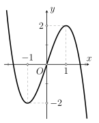
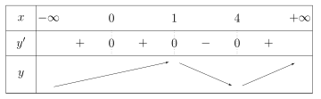
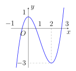
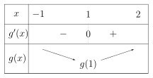

Phần I. Thí sinh trả lời từ câu 1 đến câu 12, mỗi câu hỏi chọn một phương án.
Câu 1
Cho hàm số có đồ thị y=f(x) như hình vẽ bên dưới. Hàm số đã cho nghịch biến trên khoảng nào sau đây?
A.(–1;1).
B.(−∞;1).
C.(−∞;–1).
D.(–1;+∞).

Hiện/ẩn lời giải — Câu 1
Quan sát hình vẽ thấy trên khoảng (−∞;–1) đồ thị hàm số hướng đi xuống, nên hàm số nghịch biến trên khoảng đó.
Câu 2
Cho hàm số y=f(x) liên tục trên R và có đạo hàm là f′(x)=x2(x2−5x+4),∀x∈R. Hàm số f(x) có bao nhiêu điểm cực tiểu?
A. 0.
B. 2.
C. 1.
D. 3.
Hiện/ẩn lời giải — Câu 2
Giải phương trình f′(x)=0 tìm được các nghiệm 0, 1, 4 nên lập được bảng biến thiên sau:

Câu 3
Giá trị nhỏ nhất của hàm số y=16−x2 trên đoạn [−2;2] bằng
A. 4.
B.23.
C.25.
D. 0.
Hiện/ẩn lời giải — Câu 3
Giá trị nhỏ nhất của hàm số trên đoạn [−2;2] bằng 23. Dưới đây là các bước giải chi tiết:
Tập xác định và tính liên tục: Hàm số y=16−x2 xác định và liên tục trên đoạn [−2;2].
Tính đạo hàm: y′=16−x2−x với x∈(–2;2).
y′=0⟺x=0∈[−2;2].
Tính giá trị hàm số tại hai điểm mút và điểm tới hạn:
y(–2)=23,y(0)=4,y(2)=23
Kết luận:
[−2;2]miny=23tại x=±2
Câu 4
Giá trị nhỏ nhất của hàm số y=2cos3x−29cos2x+3cosx+21 là
A. –9.
B. 1.
C.−23.
D.21.
Hiện/ẩn lời giải — Câu 4
Đặt t=cosx. Vì –1⩽cosx⩽1 nên t∈[−1;1]. Bài toán trở thành tìm giá trị nhỏ nhất của hàm số:
f(t)=2t3−29t2+3t+21trên đoạn [−1;1]
Câu 5
Tiếp tuyến của đồ thị hàm số y=x−22x+3 tại điểm có hoành độ bằng 3 có phương trình là
A.y=7x+13.
B.y=30−7x.
C.y=3x+9.
D.y=−34x−2.
Hiện/ẩn lời giải — Câu 5
Tính tung độ y0 của tiếp điểm. Thay x0=3 vào hàm số:
y0=3−22(3)+3=19=9
Tính đạo hàm y′ và hệ số góc k của tiếp tuyến.
y′=(x−2)22(–2)−3(1)=(x−2)2−7
Suy ra hệ số góc của tiếp tuyến tại x0=3 là:
k=y′(3)=(3−2)2−7=–7
Viết phương trình tiếp tuyến. Phương trình tiếp tuyến tại điểm M(3;9) có dạng:
y=k(x−x0)+y0
Từ đó tìm được phương trình tiếp tuyến của đồ thị hàm số là y=–7x+30.
Câu 6
Hàm số y=f(x)=21x2+x−6lnx+2025 nghịch biến trên khoảng nào sau đây?
A.(–3;2).
B.(2;+∞).
C.(0;3).
D.(0;1).
Hiện/ẩn lời giải — Câu 6
Điều kiện xác định: x>0.
Ta có
f′(x)=x+1−x6=xx2+x−6=x(x+3)(x−2).
Vì x>0 nên x>0 và x+3>0. Do đó
f′(x)<0⟺x−2<0⟺0<x<2.
Vậy hàm số nghịch biến trên khoảng (0;2), do đó chọn đáp án D.
Câu 7
Tìm giá trị thực của tham số a để hàm số f(x)=−x3−3x2+a có giá trị nhỏ nhất trên đoạn [−1;1] bằng 0.
A.a=2.
B.a=6.
C.a=0.
D.a=4.
Hiện/ẩn lời giải — Câu 7
Xét
f(x)=−x3−3x2+a,x∈[−1;1].
Ta có
f′(x)=–3x2−6x=–3x(x+2).
Trên [−1;1]:
f′(x)=0⟺x=0.
Tính giá trị tại hai đầu mút và điểm tới hạn:
f(–1)=a−2,f(0)=a,f(1)=a−4.
Do đó
[−1;1]minf(x)=a−4.
Theo giả thiết giá trị nhỏ nhất bằng 0, nên
a−4=0⟺a=4.
Câu 8
Một cửa hàng buôn giày nhập một đôi với giá là 40 đô-la. Cửa hàng ước tính rằng nếu đôi giày được bán với giá x đô-la thì mỗi tháng khách hàng sẽ mua (120−x) đôi. Hỏi cửa hàng bán một đôi giày giá bao nhiêu đô-la thì thu được nhiều lãi nhất?
A. 80.
B. 160.
C. 40.
D. 240.
Hiện/ẩn lời giải — Câu 8
Lợi nhuận mỗi tháng là
P(x)=(x−40)(120−x)=−x2+160x−4800.
Đây là parabol quay xuống, đạt giá trị lớn nhất tại
x=−2(–1)160=80.
Vậy giá bán để thu được nhiều lãi nhất là
80 đô-la.
Câu 9
Cho hàm số y=f(x) liên tục trên R và có đồ thị như hình bên.
Tìm giá trị lớn nhất của hàm số y=f2(x)+3 trên đoạn [0;2].
A. 12.
B. 13.
C. 2.
D. 9.

Hiện/ẩn lời giải — Câu 9
Trên đoạn [0;2], từ đồ thị ta có –3⩽f(x)⩽1, nên maxf2(x)=9. Do đó max[f2(x)+3]=9+3=12.
Câu 10
Cho hàm số f(x)=x+8x−m2 với m là tham số thực. Tìm giá trị lớn nhất của m để hàm số có giá trị nhỏ nhất trên đoạn [0;3] bằng –2.
A.m=–4.
B.m=5.
C.m=4.
D.m=1.
Hiện/ẩn lời giải — Câu 10
Ta có f′(x)=(x+8)28+m2>0, nên f(x) đồng biến trên [0;3]. Do đó min[0;3]f(x)=f(0)=−8m2=–2, suy ra m2=16, nên m=±4. Vậy giá trị lớn nhất của m là 4.
Câu 11
Cho hàm số f(x) có đạo hàm f′(x)=(x+1)(x−1)2(x−2). Giá trị nhỏ nhất của hàm số g(x)=f(x)+31x3−x−2 trên đoạn [−1;2] bằng
A.f(2)−34.
B.f(1)−38.
C.f(0)−2.
D.f(–1)−34.
Hiện/ẩn lời giải — Câu 11
Ta có g′(x)=(x+1)(x−1)(x2−3x+3). Vì x2−3x+3>0 với mọi x, nên ta có bảng biến thiên:

Dựa vào bảng biến thiên ta có hàm số đạt giá trị nhỏ nhất tại x=1:
[−1;2]ming(x)=g(1)=f(1)−38.
Câu 12
Tập hợp nào dưới đây chứa tất cả các giá trị thực của tham số m để giá trị lớn nhất của hàm số y=x4−2x2+m trên đoạn [0;2] bằng 5?
A.(−∞;–5)∪(0;+∞).
B.(–5;–2).
C.(–4;–1)∪(5;+∞).
D.(–4;–3).
Hiện/ẩn lời giải — Câu 12
Đặt u=x4−2x2. Trên [0;2], ta có minu=–1,maxu=8. Do đó
max∣u+m∣=max{∣m−1∣,∣m+8∣}=5.
Suy ra m=–4 hoặc m=–3. Cả hai giá trị đều thuộc (–5;–2).
Phần II. Thí sinh trả lời từ câu 1 đến câu 4, trong ý a), b), c), d) ở mỗi câu câu, thí sinh chọn ĐÚNG hoặc SAI.
Câu 1
Cho hàm số f(x)=x3−12x−8.
A. Hàm số đã cho có đạo hàm là f′(x)=3x2−12.
B. Phương trình f′(x)=0 có tập nghiệm là S={2}.
C.f(2)=24.
D. Giá trị lớn nhất của hàm số f(x) trên đoạn [−3;3] bằng 24.
Hiện/ẩn lời giải — Câu 1
a) Đúng, vì f′(x)=3x2−12.
b) Sai, vì f′(x)=0⟺x=±2, nên S={−2;2}.
c) Sai, vì f(2)=8−24−8=–24.
d) Sai, vì f(–3)=1,f(–2)=8,f(2)=–24,f(3)=–17. Do đó GTLN trên [−3;3] bằng 8, không phải 24.
Câu 2
Lợi nhuận thu được P (nghìn USD) của một công ty khi dùng số tiền x (nghìn USD) chi cho quảng cáo được cho bởi công thức P=P(x)=−101x3+6x2+400 với x⩾0.
A. Lợi nhuận của công ty tăng khi số tiền chi cho quảng cáo tăng.
B. Có hai phương án giúp công ty có thể thu được lợi nhuận bằng 800 nghìn USD.
C. Hàm số P=P(x) có hai điểm cực trị.
D. Lợi nhuận tối đa mà công ty thu được bằng 3,6 triệu USD.
Hiện/ẩn lời giải — Câu 2
Ta có P′(x)=–0,3x2+12x=x(12−0,3x). Với x⩾0, hàm số tăng trên (0;40), giảm trên (40;+∞).
a) Sai, vì lợi nhuận giảm khi x>40.
b) Đúng, phương trình P(x)=800 có hai nghiệm dương.
c) Sai, trên miền x⩾0, hàm số chỉ có một điểm cực trị tại x=40.
d) Đúng, P(40)=3600 nghìn USD =3,6 triệu USD.
Câu 3
Cho hàm số y=f(x)=x+2x2+2x+4.
A. Hàm số đã cho đồng biến trên khoảng (0;+∞).
B. Gọi A,B là các điểm cực đại, cực tiểu của đồ thị hàm số. Diện tích của tam giác OAB bằng 8 (đơn vị diện tích), trong đó O là gốc tọa độ.
C. Đường thẳng đi qua hai điểm cực trị của đồ thị hàm số là y=2x+2.
D. Tổng giá trị lớn nhất và giá trị nhỏ nhất của hàm số trên đoạn [−3;3] bằng –3,2.
Hiện/ẩn lời giải — Câu 3
Ta có f(x)=x+x+24, nên f′(x)=1−(x+2)24.
a) Đúng, vì f′(x)>0 với x>0.
b) Sai. Hai điểm cực trị là A(–4;–6),B(0;2), nên SOAB=4.
c) Đúng. Đường thẳng AB có phương trình y=2x+2.
d) Sai, vì hàm số không xác định tại x=–2∈[−3;3], đồng thời không có GTLN và GTNN trên đoạn này.
Câu 4
Bạn An làm đèn lồng bằng cách dùng một sợi dây đồng dài 28 (dm) cắt thành ba đoạn để uốn làm khung đèn. Đoạn thứ nhất uốn thành hình vuông ABCD có cạnh bằng x( dm ) để làm đáy, hai đoạn còn lại có độ dài bằng nhau uốn thành các đường gấp khúc ASC và BSD. Khung đèn sau khi hoàn thiện có hình dạng là một hình chóp tứ giác đều S.ABCD và bề mặt ngoài của đèn được dán giấy màu để trang trí, không dán mặt đáy (xem các mối nối, dán là không đáng kể).
A. Độ dài cạnh bên của khung đèn bằng (7−x)(dm) với 0<x<7(dm).
B. Khi x=4(dm) thì độ dài đường cao của khung đèn là 1(dm).
C. Khi các cạnh bằng nhau thì diện tích giấy màu cần dùng là 143(dm2).
D. Thể tích phần không gian của đèn lồng lớn nhất khi x=3,25(dm)(kết quả làm tròn đến hàng phần trăm).
Hiện/ẩn lời giải — Câu 4
a) Đúng. Mỗi đường gấp khúc dài 14−2x, gồm hai cạnh bên bằng nhau, nên SA=7−x.
b) Đúng. Khi x=4,SA=3,OA=22, nên SO=SA2−OA2=9−8=1 dm.
c) Sai. Khi các cạnh bằng nhau: x=7−x⇒x=3,5. Diện tích giấy là Sxq=x23=12,253dm2, không phải 143.
d) Đúng. Ta có V=31x249−14x+2x2. Vì V>0, xét 9V2=x4(49−14x+2x2). Khi đó
(9V2)′=x3(3x2−70x+196).
Suy ra điểm cực đại phù hợp là x=335−713≈3,25.
Phần III. Thí sinh trả lời từ câu 1 đến câu 6 (không làm tròn các phép tính trung gian trong các câu từ 1 đến câu 6).
Câu 1
Gọi m và M lần lượt là giá trị nhỏ nhất và giá trị lớn nhất của hàm số y=21x−x+2 trên đoạn [−1;34]. Tổng S=3m+M bằng
Hiện/ẩn lời giải — Câu 1
Ta có y′=21−2x+21=0⟺x=–1.
Trên [−1;34], hàm số đồng biến nên m=f(–1)=−23,M=f(34)=11.
Vậy S=3m+M=3⋅(−23)+11=213.
Câu 2
Cho hàm số y=(x+m)3−3(x+m)+1+n. Biết hàm số nghịch biến trên khoảng (0;2) và giá trị lớn nhất của hàm số trên [−1;1] bằng 4. Tính m+n.
Hiện/ẩn lời giải — Câu 2
Ta có y′=3(x+m)2−3. Hàm số nghịch biến trên (0;2) khi –1⩽x+m⩽1 với mọi x∈(0;2), suy ra m=–1.
Khi đó y=(x−1)3−3(x−1)+1+n. Trên [−1;1], GTLN đạt tại x=0, nên y(0)=3+n=4⇒n=1.
Vậy m+n=0.
Câu 3
Cho hàm số y=(−x3+3x−m−1)2. Tính tổng tất cả các giá trị của tham số m sao cho giá trị nhỏ nhất của hàm số trên đoạn [−1;1] bằng 4.
Hiện/ẩn lời giải — Câu 3
Đặt u(x)=−x3+3x. Trên [−1;1],u′(x)=3(1−x2)⩾0, nên u(x)∈[−2;2].
Ta cần min(u−m−1)2=4, tức khoảng cách từ m+1 đến đoạn [−2;2] bằng 2. Suy ra m+1=–4 hoặc m+1=4, nên m=–5 hoặc m=3.
Tổng các giá trị của m là –5+3=–2.
Câu 4
Một vật chuyển động theo quy luật S=−21t3+9t2, với t ( s) là khoảng thời gian tính từ lúc vật bắt đầu chuyển động và S ( m) là quãng đường vật đi được trong thời gian đó. Trong khoảng thời gian 10 giây, kể từ lúc bắt đầu chuyển động, tính vận tốc lớn nhất của vật đạt được.
Hiện/ẩn lời giải — Câu 4
Vận tốc v(t)=S′(t)=−23t2+18t. Trên [0;10],v(t) đạt lớn nhất tại t=6. Khi đó v(6)=54 m/s.
Câu 5
Một công ty sản xuất dụng cụ thể thao nhận được một đơn đặt hàng sản xuất 8000 quả bóng tennis. Công ty này sở hữu một số máy móc, mỗi máy có thể sản xuất 30 quả bóng trong một giờ. Chi phí thiết lập các máy này là 200 nghìn đồng cho mỗi máy. Khi được thiết lập, hoạt động sản xuất sẽ hoàn toàn diễn ra tự động dưới sự giám sát. Số tiền phải trả cho người giám sát là 192 nghìn đồng một giờ. Số máy móc công ty nên sử dụng là bao nhiêu để chi phí hoạt động là thấp nhất?
Hiện/ẩn lời giải — Câu 5
Gọi x là số máy sử dụng. Thời gian sản xuất 8000 quả bóng là 30x8000 giờ.
Chi phí (nghìn đồng) là C(x)=200x+192⋅30x8000=200x+x51200.
Ta có C′(x)=200−x251200=0⇒x=16.
Vậy công ty nên sử dụng 16 máy.
Câu 6
Một công ty sản xuất một loại sản phẩm. Nếu có x sản phẩm được bán ra thì bộ phận tài chính của công ty đưa ra hàm giá bán trên mỗi sản phẩm là q(x)=10000−250x (nghìn đồng), với 0<x<40. Gọi f(x) là hàm doanh thu của công ty (đơn vị: nghìn đồng). Xem y=f(x) là một hàm số xác định trên khoảng (0;40). Doanh thu lớn nhất của công ty bằng là bao nhiêu triệu đồng?
Hiện/ẩn lời giải — Câu 6
Doanh thu là f(x)=xq(x)=10000x−250x2 (nghìn đồng). Hàm số đạt lớn nhất tại x=20, khi đó f(20)=100000 nghìn đồng =100 triệu đồng.